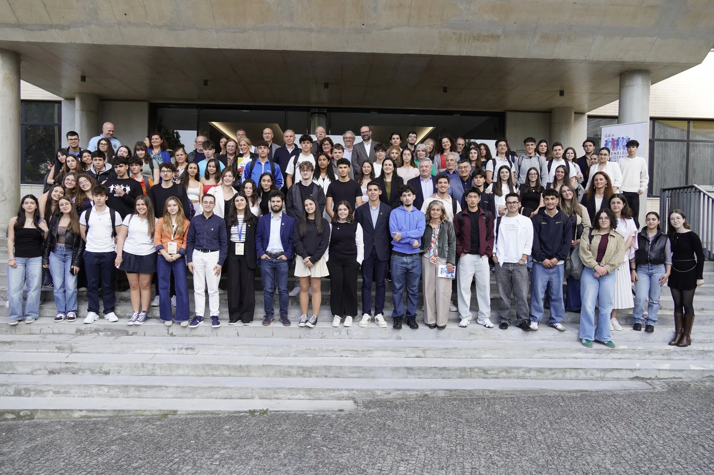

Desenvolvimento de dashboards e portais para clientes empresariais, garantindo uma UX irrepreensível, arquitetura escalável e código otimizado. Implementação de animações avançadas e integrações com APIs complexas.
/ Sobre Mim
A unir a tecnologia e
A unir a tecnologia e
a visão de negócio.
Sou um Desenvolvedor Front-End e UI/UX Designer focado em criar soluções digitais robustas e minimalistas para o mercado B2B. Acredito na estética "menos é mais" para transformar complexidade em interfaces claras que geram resultados.

01 / Filosofia & Abordagem
O Design não é apenas como parece,
O Design não é apenas como parece,
é como funciona.
A minha jornada na área digital começou com uma curiosidade insaciável sobre como as interfaces conectam pessoas e sistemas. Ao longo dos anos, especializei-me em construir pontes entre o design centrado no utilizador e a engenharia front-end de alta performance.
Acredito numa abordagem "Brutalist-Lux" — onde a clareza arquitetónica encontra a sofisticação editorial. O meu foco é o mercado corporativo e B2B, onde a complexidade de dados e processos necessita de ser destilada em interfaces minimalistas, acessíveis e altamente conversivas.
Não me limito a escrever código ou a desenhar ecrãs. Eu arquiteto sistemas digitais que escalam, com uma fundação sólida em tecnologias web modernas, CSS avançado e uma obsessão meticulosa por micro-interações e otimização de performance.
02 / Experiência Profissional
Evolução Tecnológica e de Design
Design de sistemas corporativos, guidelines e wireframes para aplicações de alta complexidade. Foco em acessibilidade, conversão e criação de design systems modulares focados em alta consistência visual.
03 / Projetos em Destaque
Trabalhos que Definem o meu Percurso


04 / Formação Académica
Base de Conhecimento Científico
Foco em engenharia de software, estruturas de dados, algoritmos e arquitetura de sistemas. Desenvolvimento de pensamento estruturado para a resolução de problemas de alta complexidade computacional.
05 / Certificações
Especializações e Cursos Técnicos
2023
Advanced Front-End Architecture
Google Developers / CourseraPrograma focado em otimização de performance, state management complexo e padrões de design escaláveis em ambientes Vanilla JS e React.
Ver Certificado PDF
2022
UI/UX Design Masterclass
Interaction Design Foundation (IxDF)Especialização em psicologia do design, acessibilidade (WCAG), testes de usabilidade e criação de Design Systems baseados em tokens.
Ver Certificado PDF
/ Competências Profissionais
Conhecimentos Técnicos
Web Front-End & Interface
HTML5 / CSS3
JavaScript (ES6+)
TypeScript
React.js
Next.js
Vue.js
Tailwind CSS
SEO
SASS / SCSS
Three.js / WebGL
Git / GitHub
GSAP
Framer Motion
Bootstrap
Vite & Webpack
Performance & Web Vitals
Figma / Canva
Design Responsivo
Web Back-End & Servidores
PHP
Node.js
Python (FastAPI & Django)
SQL / MySQL / PostgreSQL
MongoDB
APIs Rest / GraphQL
WebSockets (Socket.io)
Redis (Caching)
PHPMyAdmin
Segurança (JWT / OAuth 2.0)
Docker (Contentores)
Servidores Linux / PM2
Gestão de Domínios & DNS
Aplicações Mobile - Básico
React Native
Flutter (Dart)
UI/UX Design
XCode (iOS)
Integração de APIs Nativas
Integração Back-End
Local Storage
Progressive Web Apps (PWA)
Android Studio
Desenvolvimento de Software - Básico
C#
C++
VB.NET
Python
VBA (Excel Macros)
Microsoft Visual Studio (IDE)
Microsoft Access Databases
Algoritmos & Estruturas de Dados
/ Perfil & Idiomas
Para além da Tela
Competências Linguísticas
Português
Nativo (C2)
Inglês
Avançado (B2 Certificado)
Espanhol
Básico (A2)
Francês
Básico (A2)
Interesses Pessoais
FinTech
Mercados Financeiros
Inteligência Artificial
Empreendedorismo
Brutalismo & Design
Fotografia
Carros Desportivos
Produção Audiovisual
Golfe
Cafés
Jardins
Economia
Eletrónica
Cinema
Gastronomia
Viajar e Passear
Diplomacia & Geopolítica
Voluntariado Ativo
Arquitetura
Moda
/ Reconhecimento & Carreira
O que dizem sobre mim
/ Voluntariado & Impacto Social
Participação Cívica Jovem

2021 — Sessão Internacional
Representação no EUROSCOLA Estrasburgo
Parlamento Europeu, Estrasburgo (França)Selecionado para integrar a delegação oficial de jovens embaixadores no prestigiado programa EUROSCOLA, diretamente no hemiciclo do Parlamento Europeu em Estrasburgo. Participou ativamente em debates plenários em inglês e francês sobre o futuro da União Europeia, economia circular e transição climática, exercendo o papel de eurodeputado por um dia na discussão e votação de resoluções transfronteiriças.
Diplomacia Cívica
Euroscola
Oratória Pública
Multilinguismo
2021 — 2023
Embaixador Júnior do Parlamento Europeu
Colégio de Gaia & Parlamento EuropeuCoordenação ativa do programa "Escola Embaixadora do Parlamento Europeu" ao nível escolar. Dinamização de exposições interativas, seminários temáticos, fóruns de debate aberto e sessões de esclarecimento sobre o funcionamento institucional da União Europeia, democracia participativa e cidadania digital para a comunidade escolar de Gaia.
Liderança Jovem
Cidadania Europeia
Organização de Eventos
Políticas Públicas
Participação Anual
Deputado Jovem na Assembleia Municipal de Jovens
Câmara Municipal de Vila Nova de GaiaRepresentação juvenil ativa em sessões parlamentares municipais no Salão Nobre do Município. Elaboração, apresentação e debate de propostas de recomendação focadas em mobilidade urbana sustentável, modernização de infraestruturas culturais e digitais para jovens, e preservação do ecossistema costeiro de Vila Nova de Gaia.
Debate Político
Política Local
Advocacy Municipal
Oratória
jan de 2025 - dez de 2025 · 1 ano
Embaixador/Voluntário — Gaia Capital Nacional da Juventude 2025
Câmara Municipal de Vila Nova de Gaia (IPDJ)Reconhecido como um dos 38 embaixadores para a nomeação de Vila Nova de Gaia como a Gaia Capital Nacional da Juventude 2025, um programa promovido pelo IPDJ. Representei a juventude de Gaia em várias iniciativas de voluntariado e comunitárias, incluindo o Banco Alimentar Contra a Fome, projetos de reciclagem e solidariedade, Gaia Jovem+, entre outros.
Representação Jovem
Gaia Jovem+
Impacto Social
Cidadania Ativa
set de 2021 - nov de 2025 · 4 anos 3 meses
Voluntário — Banco Alimentar Contra a Fome
Banco Alimentar Contra a Fome (Serviço Social)Trabalho de voluntariado recorrente com o Banco Alimentar Contra a Fome através da minha escola, participando em campanhas de recolha de alimentos nas entradas de supermercados como Auchan e Continente. As atividades incluíram a distribuição de sacos aos clientes, incentivo a doações e auxílio na triagem e organização dos bens alimentares recolhidos.
Serviço Social
Solidariedade
Logística
Apoio Comunitário
jan de 2025 - dez de 2026 · 2 anos
Voluntário – Juventude de Gaia
Câmara Municipal de Vila Nova de Gaia (Cultura e Artes)Participação em diversas iniciativas de voluntariado jovem organizadas pelo Município de Vila Nova de Gaia, incluindo o Programa Municipal de Voluntariado Gaia Jovem+, projetos comunitários, sociais e iniciativas ambientais. Reconhecido com diploma pelas ações de voluntariado organizadas pela Divisão de Juventude.
Cultura e Artes
Voluntariado Jovem
Ação Ambiental
Cidadania Local